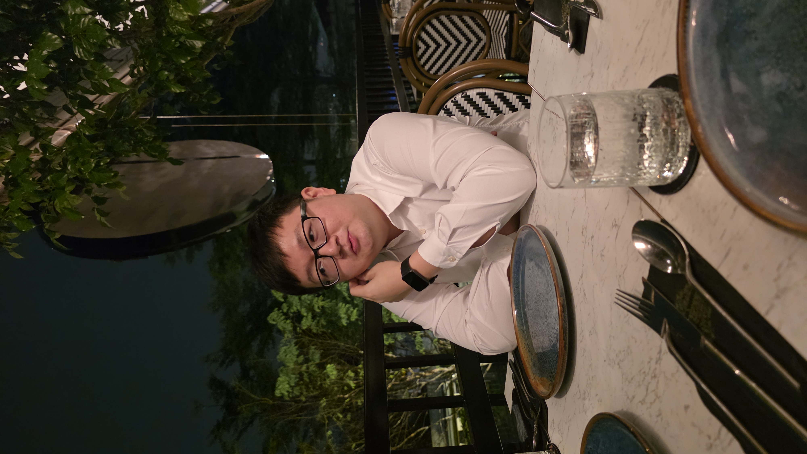

Making a little corner of the internet
Starting with a blank page, a few ideas, and the willingness to learn how to build something myself.
A personal archive · Malaysia
Hello, I'm iBentities. This is my little corner of the internet — a collection of things I'm learning, making, exploring, and returning to.

I'm interested in the many ways a person can grow. Learning a language, making music, getting stronger, creating something, or understanding someone a little better — each is a different way of being present in life.
iBentities is a place for those different pursuits to coexist. Not everything needs to become a project, and not every interest needs to become an achievement.
Think of this as a reference shelf rather than a timeline: a place to revisit ideas, follow small curiosities, and keep track of what matters to me.
A collection of interests, in no particular order. Some are long-standing; others are still taking shape.
Words, cultures, and new ways of seeing.
Learning, listening, and making things.
Noticing things worth keeping.
Strength, consistency, and being in my body.
Identity, relationships, and understanding.
Building small things for the internet.
Places, everyday details, and unfamiliar things.
Thoughts that deserve a little more space.
Small steps toward understanding more of the world.
Occasional notes from the process. The archive comes first; the timeline comes second.
Starting with a blank page, a few ideas, and the willingness to learn how to build something myself.
A reminder that interests can coexist without needing to lead to one single destination.
Pause for a moment. You're allowed to be a work in progress.